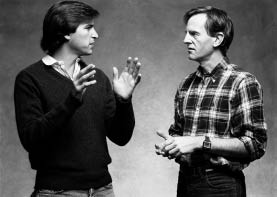

Sculley Girer
Pepsi Challenge

John Sculley ile, 1983
Flört
Mike Markkula Apple’ın başkanı olmayı asla istememişti. Yeni evlerini tasarlamaktan, özel uçağıyla uçmaktan ve hisse senedi opsiyonları sayesinde sürdürdüğü zengin hayatından hoşlanıyordu; tartışmalarda hakem olmaktan ve şişkin egolarla uğraşmaktan hazzetmiyordu. Mike Scott’ın azledilmesini sağladıktan sonra onun yerine gönülsüzce geçmişti ve karısına bu işin geçici olacağına söz vermişti. 1982’nin sonunda, neredeyse iki yıl sonra, karısı ona ültimatom verdi: Hemen yerine geçecek birini bul.
Jobs şirketi yönetmeye hazır olmadığını biliyordu, bunu denemeyi bir yönüyle istese de. Küstahlığına karşın kendini tanıyordu. Markkula bu konuda hemfikirdi. Jobs’a hâlâ biraz yontulmamış ve toy olduğunu, bu haliyle Apple’a başkanlık yapamayacağını söyledi. Bunun üzerine dışarıdan birini aramaya giriştiler.
En çok istedikleri kişi Don Estridge’ti; IBM’in kişisel bilgisayar bölümünü sıfırdan kurmuştu ve yarattığı ürün grubu, Jobs’la ekibi aşağılasalar da, Apple’ınkinden fazla satılmaya başlamıştı. Estridge bölümünü Florida’daki Boca Raton’da, New York’taki Armonk’un şirket mentalitesinden güvenli bir uzaklıkta kurmuştu. Jobs gibi o da azimli, şevklendirici, akıllı ve biraz asiydi; ama Jobs’ın tersine, parlak fikirlerinin başkaları tarafından sahiplenilmesine göz yumma yeteneğine sahipti. Jobs Boca Raton’a uçup ona 1 milyon dolar maaş ve 1 milyon dolar işe başlama ikramiyesi teklif etti, ama Estridge reddetti. Düşmanın tarafına geçecek tipte bir insan değildi. Ayrıca çalıştığı kurumun parçası olmaktan, korsan değil bahriyeli olmaktan hoşlanıyordu. Jobs’ın telefon şirketini kazıklama maceralarını duymuş ve hoşlanmamıştı. Nerede çalıştığı sorulduğunda “IBM’de,” diyebilmeye bayılıyordu.
Bunun üzerine Jobs’la Markkula başka birini bulması için Gerry Roche’yi, çevresi geniş bir personel avcısını tuttular. Teknoloji müdürlerinde odaklanmamaya karar verdiler. Onların istediği bir tüketici pazarı uzmanıydı; reklamdan, pazar araştırmalarından anlayan ve Wall Street’te olumlu izlenim uyandıracak saygın biriydi. Roche gözünü zamanın en gözde tüketici pazarı uzmanı olan, PepsiCo’nun Pepsi-Cola bölümünün başkanı, Pepsi Challenge reklam kampanyasıyla büyük başarı kazanmış John Sculley’ye dikti. Jobs Stanford iktisat öğrencilerine konuşma yapmaya gittiğinde, daha önce o sınıfta konuşma yapmış olan Sculley hakkında iyi şeyler duydu. Bu yüzden Roche’ye onunla tanışmaktan memnunluk duyacağını söyledi.
Sculley’nin geçmişi Jobs’ınkinden çok farklıydı. Annesi evden çıkarken beyaz eldiven giyen, Manhattan’ın yukarı doğu yakasında doğmuş bir ev kadınıydı; babasıysa tam bir Wall Street avukatıydı. Sculley St. Mark’s okuluna gönderilmişti, sonra da Brown’dan mezun olmuş ve Wharton iktisat bölümünü bitirmişti. Ürün geliştirmeyle ve bilişim teknolojisiyle pek ilgilenmeyen yaratıcı bir pazarlamacı ve reklamcı olarak PepsiCo’da yükselmişti.
Sculley Noel’de, önceki evliliğinden olma iki ergen çocuğunu görmek için Los Angeles’a uçtu. Çocuklarını bir bilgisayarcıya götürdüğünde, ürünlerin çok kötü pazarlandığı dikkatini çekti. Çocukları bununla neden ilgilendiğini sorduklarında, Steve Jobs’la görüşmek için Cupertino’ya gitmeyi planladığını söyledi. Çocuklar çok heyecanlandılar. Film yıldızlarının arasında büyümüşlerdi, ama Jobs’ı gerçekten ünlü biri olarak görüyorlardı. Bunun üzerine Sculley, Jobs’ın yanında çalışmayı daha ciddi düşünmeye başladı.
Apple merkezine varınca gösterişsiz ofisler ve rahat hava dikkatini çekti. “Oradakilerin çoğu, PepsiCo’nun bakım elemanlarından daha az resmi giyinmişlerdi,” dedi. Öğle yemeğine çıktılar ve Jobs sessizce salatasını yedi, ama Sculley çoğu yöneticinin bilgisayar dünyasını fazla sorunlu bulduğunu söyleyince Jobs vaaz moduna geçti. “İnsanların bilgisayarları kullanma tarzını değiştirmek istiyoruz,” dedi.
Sculley uçakla evine dönerken düşüncelerini yazdı. Sonuçta ortaya tüketicilere ve şirket yöneticilerine bilgisayar pazarlamakla ilgili sekiz sayfalık bir memo çıktı. Bu memo yer yer biraz fazla iddialı olsa da –altı çizili sözlerle, diyagramlarla ve kutularla doluydu–, Sculley’nin gazozdan daha ilginç şeyler satmakla ilgilenmeye başladığını gösteriyordu. Önerileri arasında şu vardı: “Müşterileri Apple’ın hayatlarını zenginleştirme potansiyeliyle cezbedecek perakende pazarlama yöntemlerine yatırım yapın!” (Kelimelerin altını çizmekten hoşlanıyordu.) Pepsi’den ayrılmaya hâlâ gönülsüzdü. Ama Jobs ilgisini çekiyordu. “O genç, küstah dahi ilgimi çekmişti ve onu biraz daha tanımanın eğlenceli olacağını düşündüm,” diye anımsıyordu.
Dolayısıyla Jobs’ın New York’a bir sonraki gelişinde (Ocak 1983’te, Carlyle Oteli’nde yapılacak Lisa tanıtımı için), Sculley onunla tekrar görüşmeyi kabul etti. Röportajlarla geçen bir günden sonra Apple ekibi süite randevusuz bir ziyaretçinin gelmesine şaşırdı. Jobs kravatını gevşetti ve Sculley’yi tanıttı; onun Pepsi’nin başkanı ve potansiyel bir önemli müşteri olduğunu söyledi. John Couch Lisa’yı tanıtırken Jobs zaman zaman araya girip yorumlar yaptı, Lisa’nın insanların bilgisayarlarla etkileşiminin doğasını değiştireceğinden bahsederken “devrimsel” ve “inanılmaz” gibi favori sözcüklerini sık sık kullandı.
Sonra Four Seasons restoranına gittiler; bu şıkır şıkır, zarif ve etkileyici mekânı Mies van der Rohe’yle Philip Johnson tasarlamıştı. Jobs özel bir vegan yemeği yerken Sculley Pepsi’nin pazarlama başarısından bahsetti. Pepsi Kuşağı reklam kampanyasının sadece bir ürünü değil, bir hayat tarzını ve iyimser bir bakış açısını sattığını söyledi. “Bence Apple’ın bir Apple Kuşağı yaratma şansı var,” diye hemfikir oldu Jobs hararetle. Pepsi Challenge reklam kampanyasıysa ürünü vurgulamanın bir yoluydu; reklamları, olayları ve halkla ilişkileri harmanlayıp ses getirmişti. Jobs yeni bir ürünü tüm ülkede heyecan uyandıracak şekilde tanıtmanın, Apple’de kendisinin ve Regis McKenna’nın yapmak istediği şey olduğunu söyledi.
Konuşmayı bitirdiklerinde saat geceyarısına geliyordu. “Hayatımın en heyecanlı akşamlarından biri oldu bu,” dedi Jobs, Sculley ona Carlyle’a kadar eşlik ederken. “Ne kadar eğlendiğimi anlatamam.” Sculley o gece Connecticut Greenwich’teki evine dönünce uyuyamadı. Jobs’la konuşmak şişelemecilerle pazarlık yapmaktan çok daha eğlenceli olmuştu. “Beni şevklendirdi, epeydir bastırdığım yaratıcılık arzumu harekete geçirdi,” dedi sonradan. Ertesi sabah Roche, Sculley’yi aradı. “Dün gece neler yaptınız bilmiyorum, ama Steve’in ağzı kulaklarında resmen,” dedi.
Böylece flört devam etti; Sculley elde edilmesi zor ama imkânsız olmayan kişi rolündeydi. Jobs Şubat’ta bir Cumartesi doğuya gelince, limuzinle Greenwich’e gitti. Sculley’nin yeni yaptırdığı cam duvarlı konağı fazla gösterişli buldu, ama hususi yaptırdığı 135 kiloluk meşe kapılara bayıldı; bu kapılar öyle özenli ve dengeli bir şekilde takılmışlardı ki, parmakla dokununca açılıyorlardı. “Steve buna hayran kaldı, çünkü benim gibi o da bir mükemmeliyetçi,” diye anımsıyordu Sculley. Böylece sağlıksız bir süreç başladı; Sculley kendinde bulunduğunu varsaydığı nitelikleri Jobs’ta görüyor ve ona hayranlık duyuyordu.
Sculley normalde Cadillac kullanırdı, ama (misafirinin zevkini sezince) karısının üstü açılır Mercedes 450SL’sini alıp Jobs’ı Pepsi’nin yarım kilometrekarelik şirket merkezine götürdü; burası Apple’ın merkezi gibi sade değil gösterişliydi. Jobs’a göre, yeni doğmuş enerjik dijital ekonomiyle Fortune 500’de yer alan şirketlerin arasındaki farkın somut örneğiydi bu. Bakımlı arazilerden ve heykelli bir bahçeden (Rodin, Moore, Calder ve Giacometti’nin eserleri vardı) geçen yılankavi yol onları Edward Durrell Stone’un tasarladığı beton ve cam binaya götürdü. Sculley’nin dev ofisinde bir Acem halısı, dokuz pencere, küçük bir özel bahçe, gizli bir çalışma odası ve banyo vardı. Jobs şirketin spor salonunu görünce yöneticilerin jakuzili, ayrı bir bölüme sahip olmalarına şaşırdı. “Bu tuhaf,” dedi. Sculley hemen hemfikir oldu. “Aslında buna karşıyım ve bazen gidip personel bölümünde egzersiz yapıyorum,” dedi.
Bir sonraki görüşmeleri Cupertino’da gerçekleşti; Sculley Hawaii’deki bir Pepsi şişelemecileri toplantısına katıldıktan sonra geri dönerken oraya uğradı. Macintosh’un pazarlama müdürü Mike Murray ekibi ziyarete hazırlama işini üstlendi, ama asıl hedef ona söylenmedi. “PepsiCo önümüzdeki birkaç yılda binlerce Mac satın alabilir,” dedi Macintosh ekibine gönderdiği bir memoda neşeyle. “Bay Sculley ile Bay Jobs geçen sene arkadaş oldular. Bay Sculley üst liglerdeki en iyi pazarlama başkanlarından biri kabul ediliyor, yani burada iyi zaman geçirmesini sağlayalım.”
Jobs Macintosh’a duyduğu heyecanı Sculley’nin paylaşmasını istiyordu. “Bu ürün hayatımda yaptığım her şeyden daha önemli benim için,” dedi. “Apple’dakilerin dışında onu gören ilk insan olmanı istiyorum.” Prototipi bir vinil torbadan dramatik bir edayla çıkarıp tanıttı. Sculley, Jobs’ı makinesi kadar ilginç buldu. “İş adamından çok şovmene benziyordu. Her hareketi hesaplı gibiydi, sanki önceden prova yapmıştı.”
Jobs, Hertzfeld’e ve ekibe Sculley’yi eğlendirmek için özel bir ekran görüntüsü hazırlamalarını söylemişti. “O cidden zekidir,” dedi Jobs. “Ne kadar zeki olduğuna inanamazsınız.” Sculley’nin Pepsi’ye bir sürü Macintosh alabileceği fikri “bana pek inandırıcı gelmedi,” diye anımsıyordu Hertzfeld, ama o ve Susan Kare bir ekran görüntüsü hazırladılar; bunda Apple logosunun yanında Pepsi kapakları ve kutuları beliriyordu. Hertzfeld öyle heyecanlandı ki demo sırasında elini kolunu sallamaya başladı, ama Sculley pek ilgilenmemiş gibiydi. “Birkaç soru sordu, ama çok ilgilenmiş görünmüyordu,” diye anımsıyordu Hertzfeld. Aslında Sculley’ye asla ısınamadı. “İnanılmaz samimiyetsiz biriydi, çok yapmacıktı,” dedi sonradan. “Teknolojiyle ilgilenir gibi yapıyordu, ama ilgilenmiyordu. O pazarlamacıydı ve pazarlamacılar böyledir: Yapmacıktırlar.”
Sonunda Jobs Mart’ta New York’a gidince flörtü kör ve köreltici bir aşka dönüştürebildi. “Bence aradığım adam sensin gerçekten,” dedi Jobs, Central Park’ta yürürlerken. “Gelip benimle çalışmanı istiyorum. Senden çok şey öğrenebilirim.” Geçmişte baba figürlerine bağlanmış olan Jobs, Sculley’nin egosunu ve özgüvensiz yönlerini lehine kullanmayı biliyordu. Taktiği işe yaradı. “Ondan etkilendim,” dedi Sculley sonradan. “Steve hayatımda tanıdığım en zeki insanlardan biriydi. Benim gibi o da fikirlere tutkundu.”
Sanat tarihiyle ilgilenen Sculley, Metropolitan Müzesi’ne gitmelerini istedi; amacı Jobs’ın sahiden başkalarından bir şeyler öğrenmeye gönüllü olup olmadığını anlamak için küçük bir test yapmaktı. “Bilmediği bir konuda bir şeyler öğretilmesine nasıl tepki vereceğini görmek istiyordum,” diye anımsıyordu. Yunan ve Roma antikalarının arasından geçerlerken Sculley İÖ 6. yüzyıldaki Arkaik heykel sanatıyla bir yüzyıl sonraki Perikles dönemi heykellerinin arasındaki farkı açıklamaya girişti. Üniversitede tarih eğitimi almamış olan ve ufak tefek tarihsel bilgiler edinmeye bayılan Jobs, bu konuyla ilgilenmiş gibiydi. “Çok parlak bir öğrencinin öğretmeni olabileceğim hissine kapıldım,” diye anımsıyordu Sculley. Birbirlerine benzediklerini düşündü yine. “Onda gençlik halimi gördüm. Ben de sabırsız, dikkafalı, küstah, aceleciydim. Fikirlerle doluydum ve başka hiçbir şeyi umursamıyordum genellikle. Ben de beklentilerimi karşılamayan insanlara karşı tahammülsüzdüm.”
Uzun yürüyüşlerini sürdürürlerken Sculley tatillerinde Paris’teki Sol Yaka’ya gidip resim yaptığını söyledi; iş adamı olmasa ressam olacağını söyledi. Jobs ise bilgisayar işine girmese Paris’te yaşayan bir şair olabileceği karşılığını verdi. Broadway’den geçip 49. Sokak’taki Colony Records mağazasına girdiler ve Jobs burada Sculley’ye sevdiği müzisyenlerden, Bob Dylan’dan, Joan Baez’den, Ella Fitzgerald’dan ve Windham Hill plak şirketinin yayınladığı caz albümlerinden bahsetti. Sonra geri dönüp ta Batı Central Park’taki San Remo’ya ve 74. Sokak’a yürüdüler (Jobs burada bir dubleks çatı dairesi satın almayı planlıyordu).
Anlaşmaları teraslardan birinde, açık havada gerçekleşti; Sculley duvara yakın duruyordu, çünkü yüksekten korkardı. Önce para meselesini konuştular. “Ona 1 milyon dolar maaş, 1 milyon dolar işe başlama ikramiyesi ve ayrılmak istersem 1 milyon dolar tazminat istediğimi söyledim,” diyor Sculley. Jobs bu isteklerin karşılanabileceğini öne sürdü. “Kendi cebimden vermek zorunda kalsam bile,” dedi. “Bu sorunları bir şekilde çözmeliyiz, çünkü şimdiye kadar tanıştığım en uygun insansın sen. Tam Apple’a göre olduğunu biliyorum ve Apple en iyisini hak ediyor.” Daha önce hiç gerçekten saygı duyduğu birinin emrinde çalışmadığını, ama Sculley’nin kendisine en çok şey öğretebilecek kişi olduğunu bildiğini söyledi. Jobs ona gözlerini kırpmadan bakıyordu. Sculley onun siyah saçlarının gürlüğüne şaşırdı.
Sculley son anda cayar gibi oldu; belki de sadece arkadaş kalmaları gerektiğini, Jobs’a dışarıdan tavsiyeler verebileceğini söyledi. O doruk anını sonradan şöyle anlattı: “Steve başını eğmişti, ayaklarına bakıyordu. Ağır, gergin bir sessizlikten sonra bana günlerce kafamı kurcalayacak şu soruyu sordu: ‘Hayatının geri kalanını şekerli su satarak mı geçirmek istiyorsun, yoksa dünyayı değiştirme fırsatına sahip olmak mı?’”
Sculley karnına yumruk yemiş gibi hissetti. Teslim olmaktan başka yapabileceği bir şey yoktu. “İstediği şeyleri hep elde etmek, insanların içini okumak ve onları tam olarak nasıl etkileyeceğini bilmek konusunda tuhaf bir yeteneği vardı,” diye anımsıyordu Sculley. “Hayır diyemeyeceğimi dört ay sonra ilk kez fark ettim.” Kış güneşi batmaya başlamıştı. Daireden çıktılar ve parktan geçip Carlyle’a geri döndüler.
Balayı
Markkula, Sculley’yi 500.000 dolar maaşa ve bir o kadar ikramiyeye ikna etmeyi başardı ve Sculley California’ya Mayıs 1983’te, tam Apple yöneticilerinin Pajaro Dunes’ta tatil yapacağı sırada geldi. Sculley yanına tek bir siyah takım elbise almış olsa da, Apple’daki rahat ortama alışmakta hâlâ zorlanıyordu. Jobs toplantı salonunun önünde yerde bağdaş kurup, çıplak ayaklarının baş parmaklarıyla oynuyordu dalgın dalgın. Sculley gündem belirlemeye çalıştı; ürünlerini –Apple II, Apple III, Lisa ve Mac– birbirinden farklılaştırmanın yollarını ve şirketi ürün gruplarında mı, pazarlarda mı yoksa işlevlerde mi odaklanarak organize etmenin daha mantıklı olduğunu tartışacaklardı. Oysa insanlar akıllarına gelen alakasız fikirleri söylemeye, sızlanmaya ve ağız dalaşına başladılar.
Jobs bir ara Lisa ekibini başarısız bir ürün ürettikleri için eleştirdi. “İyi de,” diye bağırdı biri, “sen daha Macintosh’u tamamlamadın bile! Neden başkalarını eleştirmeden önce piyasaya bir ürün sürmüyorsun?” Sculley afalladı. Pepsi’de kimse yönetim kurulu başkanına böyle diklenemezdi. “Oysa burada herkes Steve’e saldırıyordu.” Aklına Apple’ın reklam pazarlamacılarından birinden duyduğu eski bir espri geldi: “Apple’la izcilerin arasındaki fark nedir? İzcilerin başında bir yetişkin bulunur.”
Tartışırlarken küçük bir deprem odayı sarsmaya başladı. “Sahile koşun,” diye bağırdı birisi. Herkes kapıdan dışarı fırlayıp sahile koştu. Sonra birisi son depremin dev bir dalgaya yol açtığını söyledi. Bu sefer dönüp zıt yönde koşmaya başladılar. “Kararsızlık, çelişkili öneriler, doğal felaket... bütün bunlar ileride olacakların habercisiydi,” dedi Sculley sonradan.
Farklı ürün gruplarının arasındaki rekabet ciddiydi, ama eğlenceli bir tarafı da vardı, korsan bayrağı meselesinde görüldüğü gibi. Jobs Macintosh ekibinin haftada doksan saat çalıştığını söyleyip övününce Debi Coleman üstünde “HAFTADA 90 SAAT ÇALIŞIYORUM VE BUNA BAYILIYORUM!” yazılı kapşonlu svetşörtler yaptırdı. Bunun üzerine Lisa ekibi “Haftada 70 saat çalışıyorum ve piyasaya ürünler sürüyorum” yazılı tişörtler yaptırdı. Yavaş çalışan ama kârlı ürünler üreten Apple II ekibiyse “Haftada 60 saat çalışıyorum – ve Lisa’yla Mac’in masraflarını karşılayacak parayı kazanıyorum” yazısıyla karşılık verdi. Jobs Apple II’de çalışanlardan küçümseyerek, “Clydesdayle atları” şeklinde bahsetse de o yük beygirlerinin Apple arabasını asıl çekenler olduklarının can sıkıcı bir şekilde farkındaydı.
Jobs bir Cumartesi sabahı Sculley’yle karısı Leezy’yi kahvaltıya davet etti. O sıralar Los Gatos’daki hoş ama sıradan, Tudor tarzı bir evde, o zamanki kız arkadaşı Barbara Jasinski’yle birlikte kalıyordu; Jasinski, Regis McKenna’nın yanında çalışan zeki ve çekingen bir dilberdi. Leezy bir tava getirip vejetaryen omleti yaptı (Jobs katı vegan diyetine ara vermişti). “Çok mobilyam yok, kusura bakmayın,” diye özür diledi Jobs. “Almaya fırsat bulamadım henüz.” Süregelen tuhaflıklarından biriydi bu: Zanaatçılık konusundaki titizliği ve sadelik düşkünlüğü sebebiyle, sadece çok beğendiği eşyaları almak istiyordu. Bir Tiffany lambaya, bir antika yemek masasına ve Sony Trinitron’a bağlı bir lazerdisk oynatıcıya sahipti, ama kanepelerle koltuklar yerine yerde strafor minderler vardı. Bu hayat tarzını kendi kariyerinin başındaki, “New York’taki sıkış tıkış bir dairedeki dağınık ve sade hayatına” benzetme hatasına düşen Sculley gülümsedi.
Jobs Sculley’ye genç yaşta öleceğini düşündüğünü, bu yüzden Silikon Vadisi tarihine geçmek için çabucak bir şeyler başarması gerektiğini söyledi. “Bu dünyada hepimizin zamanı az,” dedi Sculley’lere, o sabah masada otururlarken. “Gerçekten muhteşem çok az şey başarma şansımız var herhalde. Hiçbirimiz bu dünyada ne kadar kalacağımızı bilmiyoruz, ben de bilmiyorum, ama hâlâ gençken bir sürü şey başarmam gerektiğini hissediyorum.”
Jobs’la Sculley ilişkilerinin ilk aylarında günde onlarca kez konuşuyorlardı. “Steve’le ben can dostu olduk, neredeyse birbirimizin en yakın dostu olduk,” diyor Sculley. “Birbirimizin sözünü kesip duruyorduk.” Jobs Sculley’yi övüyordu sürekli. Bir meseleyi konuşmak için uğradığında “Senden başkası anlamaz,” diyordu. Birbirlerini tanımaktan ve birlikte çalışmaktan ne kadar mutlu olduklarını birbirlerine sık sık, hatta kaygı verici olması gereken kadar sık söylüyorlardı. Ve Sculley her fırsatta Jobs’la arasında benzerlikler bulup söylüyordu:
Birbirimizin cümlelerini tamamlayabiliyorduk çünkü aynı frekanstaydık. Steve beni sabahın 2’sinde arayıp uyandırıyordu ve durup dururken aklına gelivermiş bir fikirden bahsediyordu. “Selam! Benim,” diyordu sersemlemiş haldeki bana masumca, saatin hiç farkında olmadan. Tuhaf bir şekilde, Pepsi’deyken ben de aynısını yapardım. Steve sunumlar üstünde çok çalışıyordu, slaytlar ve metinler hazırlıyordu titizce. Pepsi’deki ilk zamanlarımda ben de yapacağım konuşmaları önemli bir yönetim aracı olarak kullanmaya çalışırdım. Genç bir yöneticiyken işleri çabucak halletmek isterdim ve bizzat halletmemin daha iyi olacağını düşünürdüm genellikle. Steve de öyleydi. Bazen Steve’e bakarken, onu bir filmde beni canlandıran bir oyuncu gibi görüyordum. Aramızdaki benzerlikler tuhaftı ve geliştirdiğimiz muhteşem simbiyozun sebebiydi.
Oysa kendini kandırmaktı bu, belaya davetiye çıkarmaktı. Jobs bunu baştan sezmeye başladı. “Dünyaya, insanlara bakış açılarımız farklıydı, değer yargılarımız farklıydı,” diyor Jobs. “Sculley’nin gelmesinden birkaç ay sonra bunu fark etmeye başladım. İşleri çabuk öğrenmiyordu ve terfi ettirmek istediği insanlar genellikle geri zekâlılardı.”
Ama Jobs, Sculley’nin birbirlerine çok benzedikleri inancını destekleyerek onu manipüle edebileceğini biliyordu. Ve Sculley’yi manipüle ettikçe horgörmeye başladı. Mac grubundaki Joanna Hoffman gibi dikkatli gözlemciler durumu kısa sürede fark ettiler ve o ikisinin eninde sonunda yaşayacağı kopuşun kavgalı olacağını anladılar. “Steve, Sculley’ye kendini özel hissettiriyordu,” diyor Hoffman. “Sculley daha önce kendini özel hissetmemişti hiç. Steve onun aslında sahip olmadığı özelliklerini övdükçe Sculley ona daha çok bağlanıyordu. Yani Sculley pohpohlandıkça Steve’i daha çok sevdi. Sculley’nin bütün bu özelliklere sahip olmadığı anlaşılınca, Steve’in gerçekliği çarpıtma sahası gerginliğe yol açtı.”
Sonunda Sculley de Steve’den soğumaya başladı. Düzgün işlemeyen bir şirketi çekip çevirmeye kalkmasına yol açan zaaflarından biri başka insanları memnun etme arzusuydu, ki Jobs’la paylaşmadığı bir yönüydü bu. Daha basit bir ifadeyle, Sculley kibar bir insandı, Jobs ise değildi. Dolayısıyla Sculley, Jobs’ın iş arkadaşlarına kaba davranmasına itiraz etmeye başladı. “Gecenin 11’inde Mac binasına gidiyorduk,” diye anımsıyor, “ve ona kodlar getirip gösteriyorlardı. Bazen kodlara bakmıyordu bile. Direkt reddediyordu. Ben de nasıl öyle reddedebilirsin diyordum. O da ‘Daha iyisini yapabileceklerini biliyorum,’ diyordu.” Sculley ona akıl hocalığı yapmaya çalıştı. “Kendini dizginlemeyi öğrenmelisin,” dedi bir seferinde. Jobs buna katıldı, ama hislerini süzgeçten geçirmek doğasında yoktu.
Sculley Jobs’ın değişken kişiliğinin ve insanlara karşı tutarsız tavırlarının psikolojik kökenli olduğuna, belki de hafif bir bipolar bozukluktan kaynaklandığına inanmaya başladı. Jobs çok değişebiliyordu. Bazen çok neşeliyken bazen depresif oluyordu. Bazen durup dururken esip gürlemeye başlıyordu ve Sculley onu sakinleştirmek zorunda kalıyordu. “Yirmi dakika sonra yine telefon çalıyordu, oraya gelmemi çünkü Steve’in yine kafayı yediğini söylüyorlardı,” diyor.
İlk büyük anlaşmazlıkları Macintosh’un fiyatlandırılması üstüne oldu. Başta 1.000 dolarlık bir makine olarak düşünülmüştü, ama Jobs’ın tasarım değişiklikleri maliyeti öyle arttırmıştı ki şimdiki plan makineyi 1.995 dolara satmaktı. Ancak Jobs’la Sculley dev bir reklam kampanyası planlamaya başladıklarında Sculley fiyatı 500 dolar daha arttırmaları gerektiğine karar verdi. Ona göre pazarlama giderleri diğer üretim giderlerinden farksızdı ve fiyata yedirilmesi gerekiyordu. Jobs ısrarla reddetti. “Temsil ettiğimiz her şeye aykırı olur bu,” dedi. “Amacım kârı arttırmak değil, devrim yapmak.” Sculley seçeneklerin basit olduğunu söyledi: Ya makine 1.995 dolara satılacaktı ya da büyük bir reklam kampanyası yapılacaktı, ama ikisi birden olmazdı.
“Bundan hoşlanmayacaksınız,” dedi Jobs Hertzfeld’le diğer mühendislere, “ama Sculley Mac’i 1.995 dolara değil 2.495 dolara satmamızda diretiyor.” Mühendisler sahiden de dehşete kapıldılar. Hertzfeld Mac’i kendileri gibi insanlar için tasarladıklarını, onu pahalıya satmanın savundukları şeylere “ihanet” olacağını söyledi. Bunun üzerine Jobs onlara söz verdi: “Merak etmeyin, ona izin vermeyeceğim!” Ama sonunda Sculley kazandı. Jobs 25 yıl sonra bile o kararı hatırlayınca sinirlendi. “Macintosh’un satışlarının azalmasının ve Microsoft’un pazarı ele geçirmesinin en büyük sebebi bu,” dedi. Bu karar ürününün ve şirketinin kontrolünü yitirmeye başladığını hissetmesine yol açtı, ki bir kaplana köşeye sıkıştığını hissettirmek kadar tehlikeliydi bu.